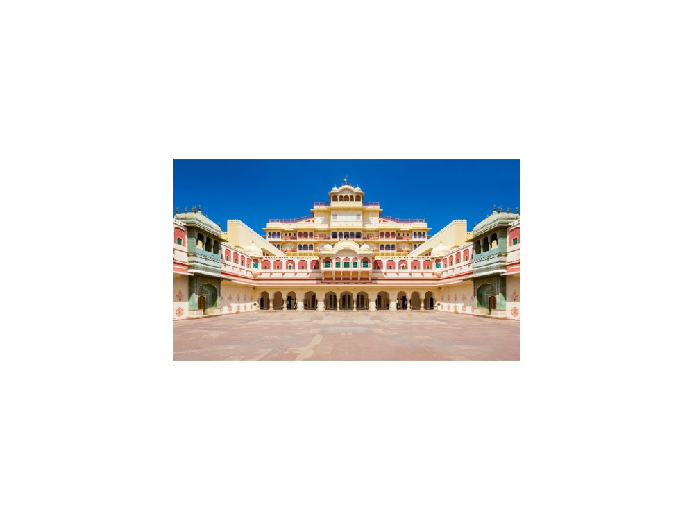
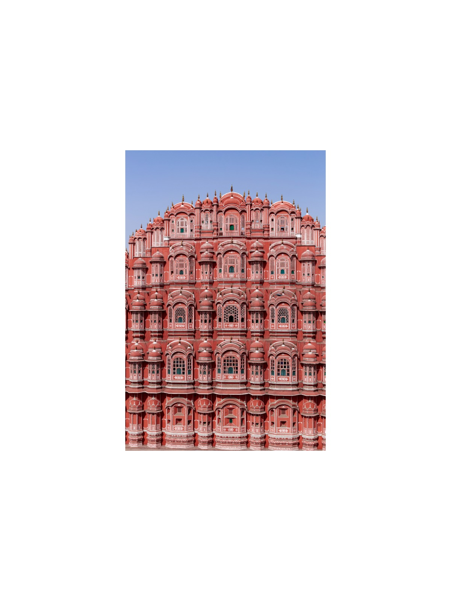
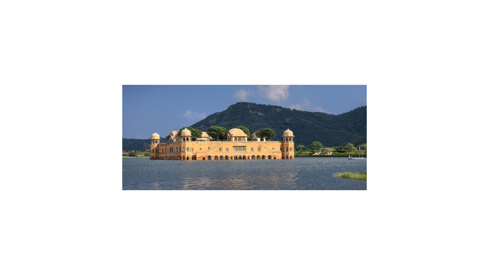

The journey
Connects the ancient 1,000-year-old stepwell of Abhaneri with Jaipur's UNESCO World Heritage sites, hilltop fortresses, and royal palace quarter.
Comfortable rhythm with time at each site.
Highlights
- Chand Baori Stepwell in Abhaneri (3,500 symmetrical steps).
- Amber Fort, Jaigarh Fort, and Nahargarh Fort sunset view.
- City Palace, UNESCO Jantar Mantar, and Hawa Mahal.
Day by day
Ancient Stepwells, The Pink City & Hilltop Sunset
06:00 AM: Departure from Delhi.
10:30 AM: Visit Chand Baori stepwell and Harshat Mata Temple in Abhaneri village.
01:00 PM: Arrival in Jaipur and Rajasthani lunch.
02:30 PM: Tour City Palace and Jantar Mantar observatory.
04:30 PM: Photo stops at Hawa Mahal and Jal Mahal.
05:30 PM: Sunset over Jaipur from Nahargarh Fort in the Aravalli Hills. Overnight in Jaipur.
Rajput Hill Forts & Return to Delhi
08:00 AM: Breakfast and check-out.
09:00 AM: Tour Amber Fort (Sheesh Mahal, Jas Mandir).
11:30 AM: Tour Jaigarh Fort and Jaivana cannon.
01:00 PM: Lunch and stroll through Johari/Bapu handicraft bazaars.
03:00 PM: Chauffeured return drive to Delhi.
08:00 PM: Drop-off at Delhi hotel or airport.
What is included
Included
- Private air-conditioned vehicle with driver
- Licensed guide (English or Russian)
- Monument entry fees
- Hotels (1 night)
Not included
- Meals unless stated
- Tips and personal expenses
- Travel insurance
Indicative; your personal quotation confirms exactly what is included.
Places on this journey
Chand Baori Amber Fort
Amber Fort Jaigarh Fort
Jaigarh Fort Nahargarh Fort
Nahargarh Fort
City Palace Jantar Mantar
Jantar Mantar
Hawa Mahal
Jal MahalThemes
Express Escapes UNESCO World Heritage Trail Royal Fortresses & Citadels
Destinations
Similar journeys
 1 Day
1 Day1-Day Taj Mahal & Agra Fort: Private Day Journey from Delhi
Features two premier UNESCO World Heritage monuments (Taj Mahal and Agra Fort) and showcases Mughal royal fortress architecture and citadel…
View journey → 1 Day
1 Day1-Day Imperial Delhi & Spiritual Heritage: Private Full-Day Tour
Encompasses UNESCO World Heritage landmarks (Humayun's Tomb, Qutub Minar, Red Fort) alongside sacred spiritual sanctuaries of Islam, Sikhism, and…
View journey →1 Day1-Day Jaipur Royal Express: Private Tour from Delhi
Incorporates UNESCO-listed Amber Fort and Jaipur Walled City monuments, centered entirely on Kachhwaha Rajput royal palaces and military…
View journey →